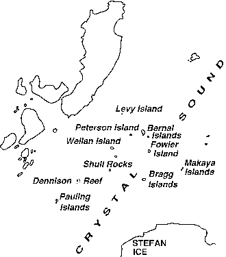

The photograph on the front cover shows 'glassy ice' near Crystal
Sound, Argentine islands; it was taken by Durward Cruickshank on 18th
January 1998. He describes the story of his trip on the following pages.
The rough sketch map below shows the area.
Large scale map of area.

enlarged view of Crystal Sound
King penguin with chick, South Georgia.
In January 1998 I went on a cruise to the Antarctic Peninsula. This is
the long arm which sticks out from the main Antarctic continent towards the
tip of South America.
To join the World Discoverer I had to fly via Buenos Aires. See
sketch map above.
There I had a reunion with my former graduate student
Leo Becka who did splendid work in 1961 on hexamethylenetetramine at
temperatures down to 34 K - far below any temperature ever recorded in
Antarctica.
I joined the ship at Ushuaia for the voyage south to the glaciers, icebergs, penguins and whales.
One day studying the charts I noticed a region called Crystal Sound off the
west coast of the peninsula. On looking more closely I recognised some
rather familiar names given to the little islands and rocks in the Sound:
Bragg, Dennison, Bernal, Fowler, Pauling, Owston, Shull, Wollan, Levy,
Peterson...There were other names less familiar to me: Kidd, McConnel,
Matsuyama, Nakaya, ... Further south were Megaw Island, Nye Glacier and
Perutz Glacier.
Thanks to help from the British Antarctic Survey
and the Scott Polar Research Institute, both in Cambridge, and with some
assistance from Frank Allen and Kate Crennell,
I eventually learnt how
these bleak places got their names. There are many thousands of topological
features in Antarctica, and in this particular area the Antarctic
Place-names Committee is the responsible British naming authority. They
decided to use the names of pioneers in techniques which have helped in the
elucidation of Antarctic problems. Glaciologists are obvious choices, and
within that group the names of the investigators of the structure of ice
crystals were chosen for features in Crystal Sound.
Evidently Dr Brian
Roberts (1912-1978) handled the selection of names, which he described in an
article Glaciologists and Antarctic place-names, published in
Ice (Cambridge, 1962) 9,10-18. He lists over 100
glaciologists and their achievements e.g.
The highlight of my cruise was a visit to Elephant Island. Here most of
Shackleton's party had waited 4 winter months for rescue after Shackleton
set sail for South Georgia in a 22 foot boat. Led by Frank Wild, they
survived in a crude hut roofed by two upturned boats. James's notebook
describing the scene inside the exceedingly cramped shelter is on display in
the museum at the Scott Polar Institute. Crystallographers who find his
treatise on X-ray diffraction tough reading may be surprised by his
contribution to the camp singsongs. The chorus to his song 'Antarctic
Architecture' ran:
My name is Frankie Wild-o and my hut's on Elephant Isle,
The wall's without a single brick and the roof's without a tile,
Yet nevertheless, you must confess by many and many a mile,
It's the most palatial place you'll find on Elephant Isle.
James' most distinguished student is well known to the BCA: Sir Aaron Klug OM, President of the Royal Society and winner of the Nobel Prize in Chemistry in 1982 for his development of crystallographic electron microscopy and the structures of nucleic acid-protein complexes.
Durward Cruickshank
Editor's Note: I am planning some new BCA Web pages about ice, including the phase diagram and structures. Please send in your suggestions for URLs to which I can link.
On 18 January 1998 Durward visited the Ukrainian Antarctic station, formerly the British Faraday station, shown on the cover of the envelope above. The stamp (top right) also depicts the station. This is where the original measurements were made which discovered the hole in the ozone layer. These were done using the uv spectrometer shown below.
Acknowledgment of Copyright
All the images in this file are copyright Durward Cruickshank. The BCA is
gratful for permission to use them here to illustrate his article.
 Click here to return to BCA homepage
Click here to return to BCA homepage